Chapter 5 Results
5.1 Correlation Between Variables
For ease in graphing we will declare our variables as:
- Year: The year in which the tagged posts were created
- TagCount: The sum of all occurrences of a tag in our sample per year
- TotalViews: The sum of all view counts for posts the tag appears in per year
- TotalComments: The sum of all comments of the tagged posts per year
- AcceptedAnswers: The number of posts that were marked as accepted for a given tag per year
- TotalAnswers: The sum of all answers for tagged posts per year
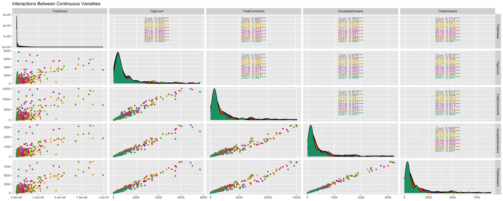
The variables TagCount, TotalComments, AcceptedAnswers, and TotalAnswers are all heavily correlated. To measure the success or popularity of each tag over time we are going to have to rely on one of these variables rather than a mixture of the four of them.
Each of these four variables are also to a lesser extent positively correlated with the total views each tag receives. This may be due to minimal interactions to the post after the initial answers and comments come in. Logically it is unlikely that any one question has an infinite amount of answers, after a few reasonable answers are posted to a question there may be diminishing returns.
The distribution for all of these variables are skewed right with long tails implying that we may have some outliers.
It is important to note that the correlations between these variables appear to differ by year. The total amount of views is more correlated with every other variable in 2021 than any other year. The correlation of our variables within years is higher than the overall correlation for the entire time period. This is particularly true of the correlations between views and the other variables but it can be noted that the overall correlation is lower than the correlation calculated by year for every combination of year and variables except for the correlation between total answers and total comments for the years 2018,2019, and 2021. This may be an indication that our data has a tendency to change slowly over multiple year rather than quickly over one or two years.
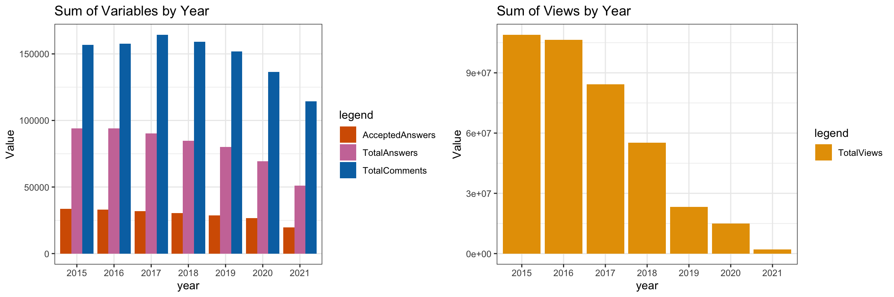
It appears that views accumulate over time, this measure will not give us an accurate depiction of a tags popularity in any given year but may be telling of which tag is most popular overall. Answers and comments accumulate over time to a lesser degree and are also likely to give a skewed definition of yearly popularity. The number of accepted answers for each tag are a little more stable over time, though there is a slightly smaller amount of accepted answers in the past year which may be related to the amount of time a question is up before being answered and then having that answer marked as accepted.
Interestingly enough the only variable here to increase from one year to the next is the total number of comments from 2016 to 2017. This coincides with the maximum number of comments a tag received in a year which was javascript in 2017 with 15100 comments. There could be an event in 2017 that caused an increase in comments that we have not controlled for like an influx in the overall usage of coding languages or a shift in the amount of people interested in coding.
5.2 Relationship between Views and Answers

For tags with less than 2,500 answers, majority of the tags have similar total answers regardless of their total number of views, with two tags having high total views but average number of total answers, which might be outlier tags in this group. This may imply little to no correlation on the total answers and total views, so a tag having high views does not necessarily guarantee it will receive answers in proportional to its views.
For tags that have answers in between 2,500 and 5,000 total answers, as the total number of views per tag increases, the total number of answers tend to increase as well. This suggests that the more views a tag in this group has, the more answers it is likely to receive.
For tags that have more than 5,000 answers, the amount of views vary from the lowest to the greatest (10 million), suggesting little to no correlation between the number of views a tag in this group has and number of answers it has received. Some tags with less than 1 million views received more than 5000 answers, while some other tags in this group have more than 10 million views but received about the same amount of answers.
5.3 Usage over Time
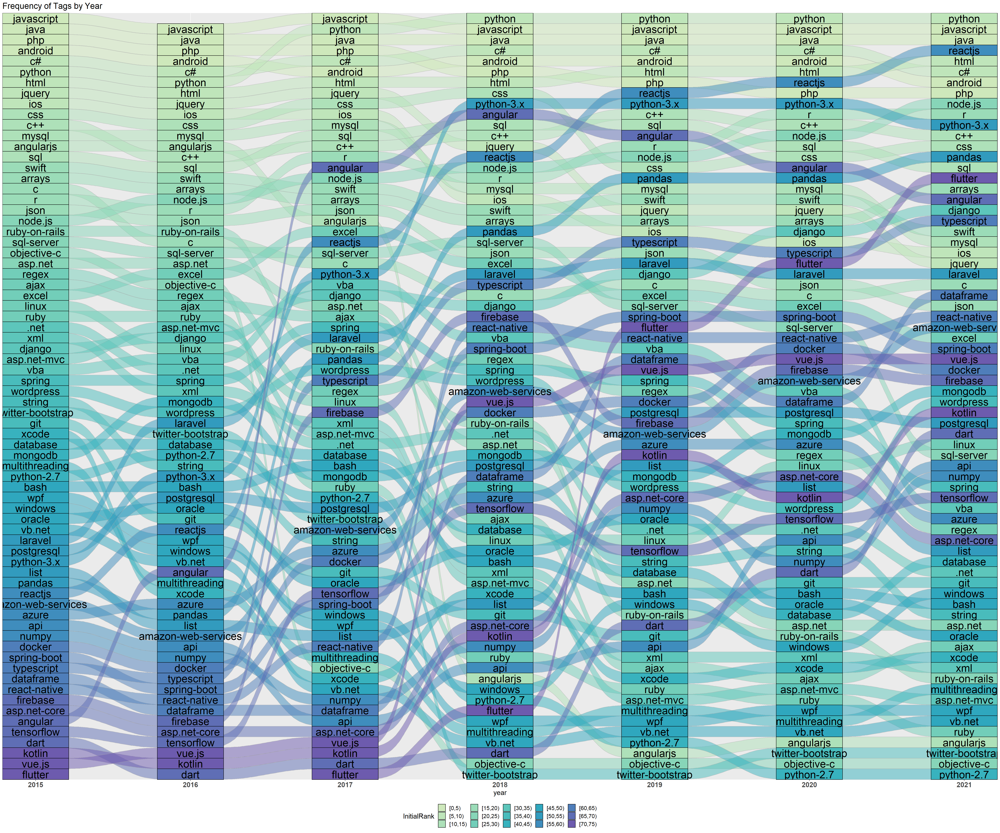
This alluvial plot reveals some pretty interesting information about the trends in the usage of different tags over time and confirms the theory that the frequency of usage for each tag is not constant.
Some noteworthy trends here include:
- Java and Javascript remain in the top five most used tags every year.
- Python surpassed Javascript as the top rank in 2018 and has maintained this position.
- 2016 contains one less rank due to the fact that no instances of the tag Flutter were in our sample for that year.
- reactjs, node.js, pandas, and flutter have been consistently increasing in rank since 2015.
- Usage of angular seems to have peaked in 2018 and now appears to be on a steady decline.
- Usage of dart appears to have dipped a little in 2016 but has been consistently rising since.
- As python-3.x rose in usage, python-2.7 decreased in usage which is to be expected.
- Tags seems to increase or decrease in usage slowly over time rather than jump rapidly in usage, however there are a few larger than expected jumps in popularity such as angular between 2016 and 2017, and flutter between 2018 and 2019.
- usage of angular appears to replace usage of angularjs between 2016 and 2017,as such angularjs is the only tag that ranked in the top 15 in 2015 and bottom 5 in 2021. angularjs is the only Tag to drop more than 30 ranks within one year.
5.4 Porportion of Usage

These two treemaps while very similar, emphasize that the amount of accepted answers in 2021 (and 2020 to a lesser extent) is much smaller than would be expected from the overall number of tags recorded. Aside from that we see that the distribution of accepted answers for each tag and frequency of each tag is practically identical.
These figures really draw attention to the large proportion of the usage of python, Javascript, and java. These three tags always maintain their position in the top 5 most used tags and are proportionally used more than twice as much as tags that are between the fifth and tenth most used.
5.5 Rate of Change in Usage
 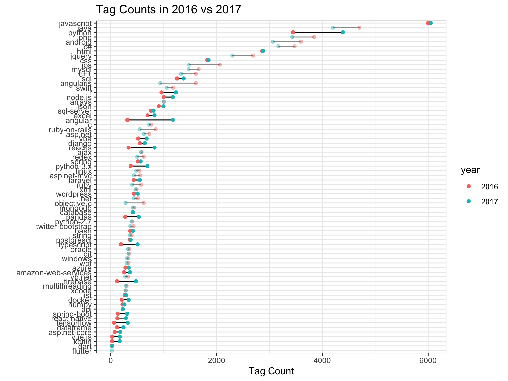
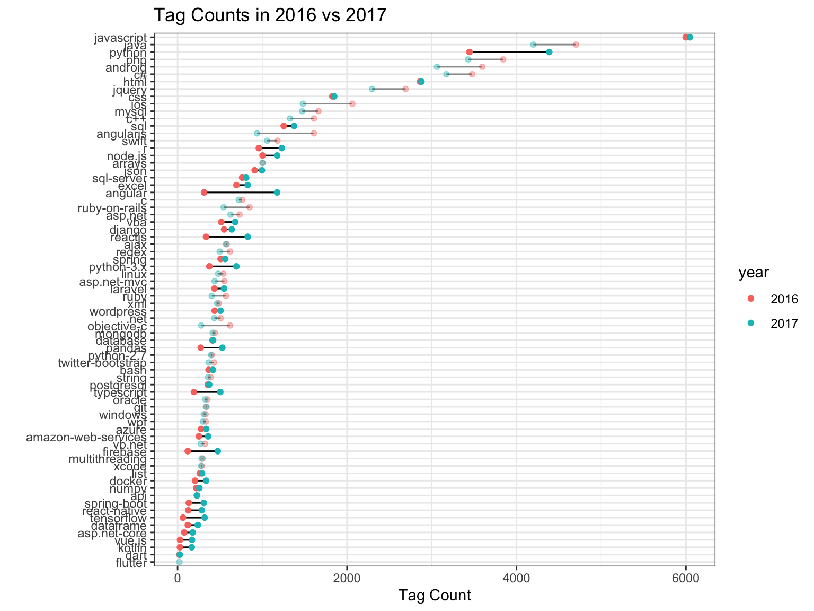 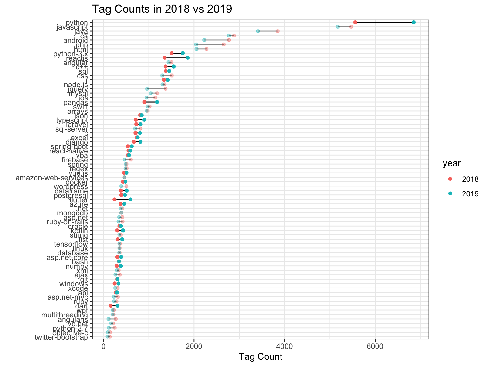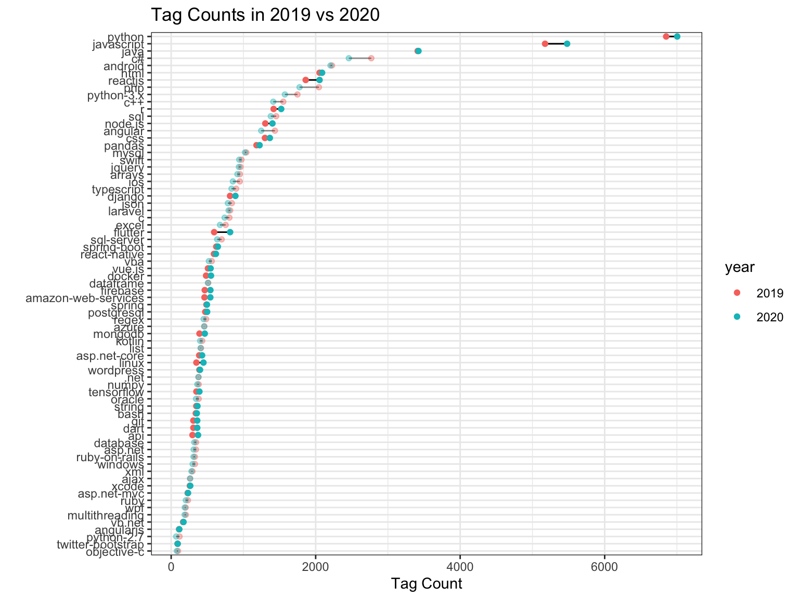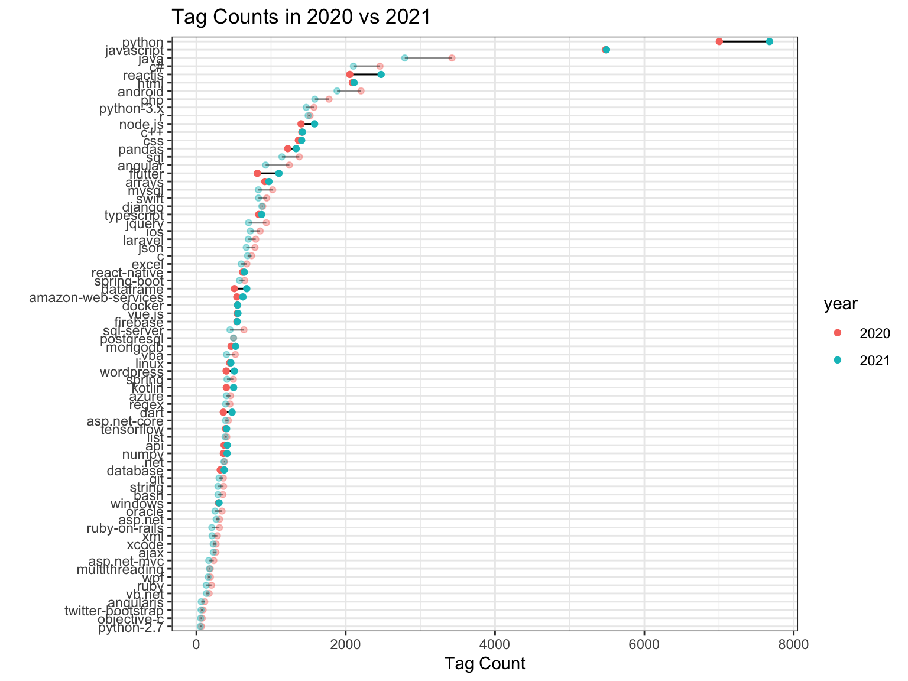
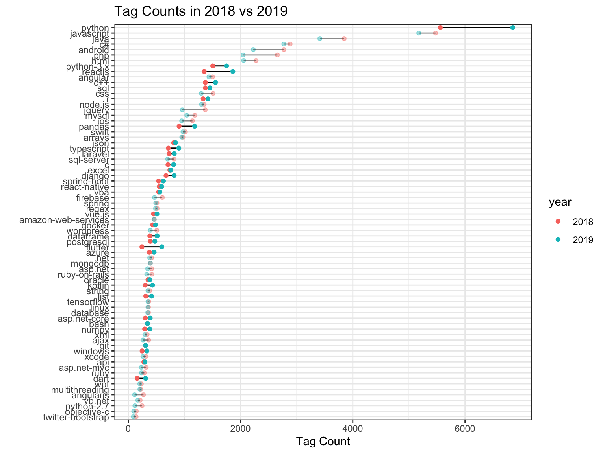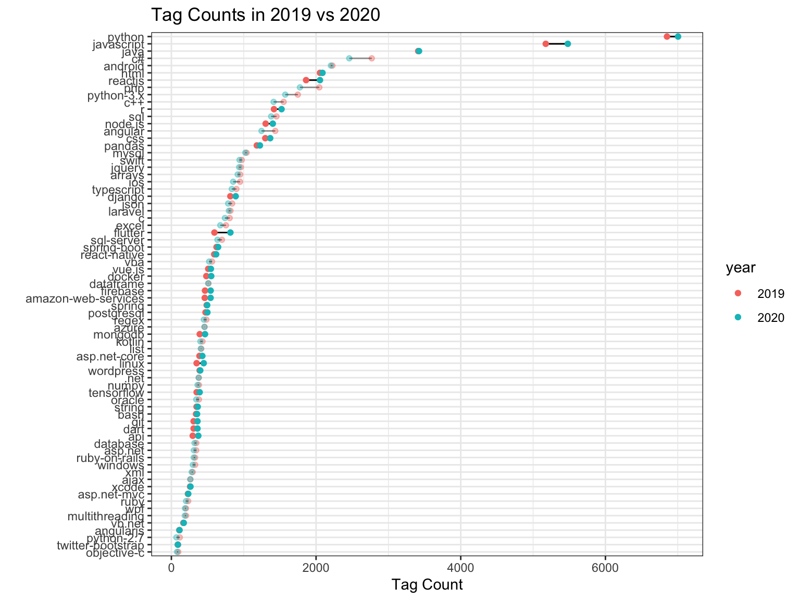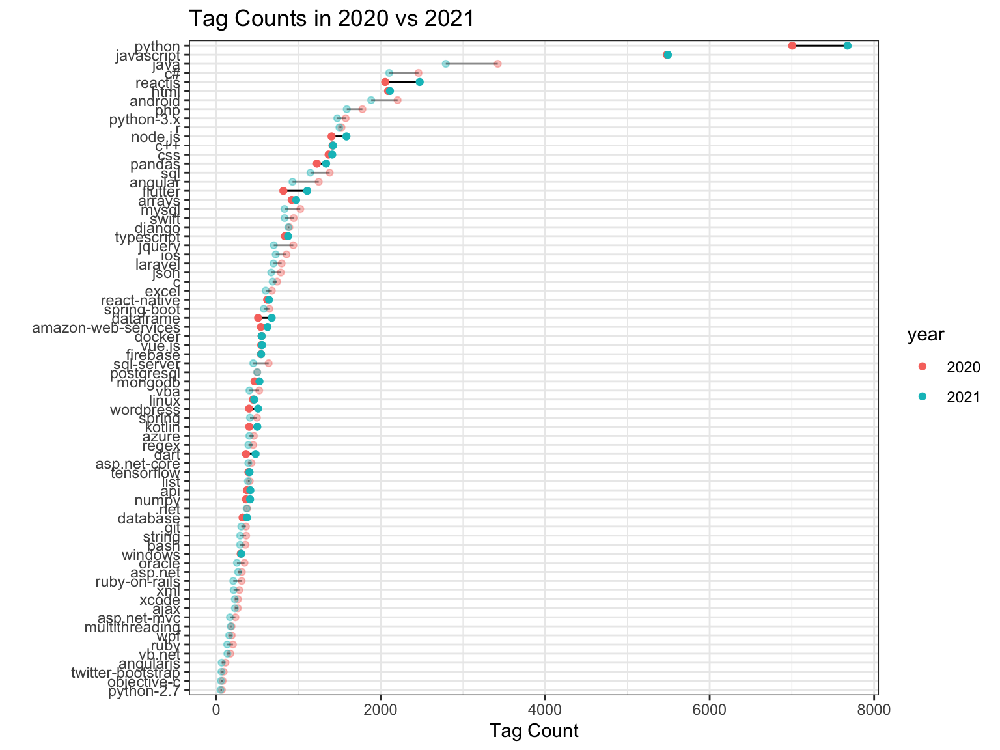
Highlighted tags are the ones with an increase between any two consecutive years.
The changes (both increase and decrease in the number of tag counts) for the tags from year 2015 to 2016 have the least variation in magnitude in comparing to the other 5 cleveland dot plots, while in the plots of 2016 vs. 2017 and 2017 vs. 2018, the changes of magnitude appear to be the greatest among the 6 comparison plots.
Focusing on the changes for specific tags, we may notice that python gains popularity since 2015 and is ranked first place in the number of tag counts ever since 2018. Especially in 2018 vs. 2019 when the majority of the tags have relatively small changes in tag counts, python has increased substantially and by the end of 2019 exceeds the tag ranked second place (javascript) a great amount of tag counts.
From year 2016 to 2018, javascript loses tag counts and at the same time was outrun by python, to this date it has remained as the second most popular programming language tags.
Surprisingly, even though data for 2021 has only the length of three months, it has greater changes in the magnitude of tag counts for many of the tags in comparing to a full year of data for 2020.
5.7 Programming Languange Tags by Year

As shown in the histograms Sum of Variables by Year in section 1, tags in year 2021 has the least amount of usage in all of the total views, comments, answers, and accepted answers categories. However, if we take a closer look at the programming language tags as defined in the previous section, we will notice from the above density plots that around 6750 total answers there exists a local maximum for year 2021, which means year 2021 actually receives a decent amount of total answers for number of answers around 6000, despite it being the year with the least user interactions so far. So those 9 programming language tags have comparatively similar total answers in year 2021 as the previous years for high amount of total answers, or even to a greater extent if scaled proportional to the duration of the posts.